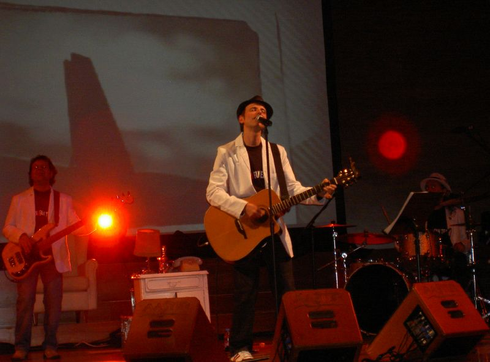
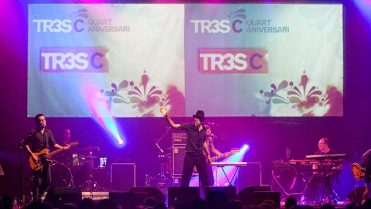
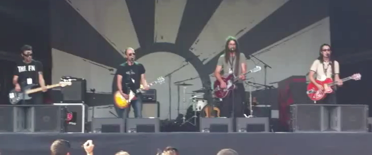
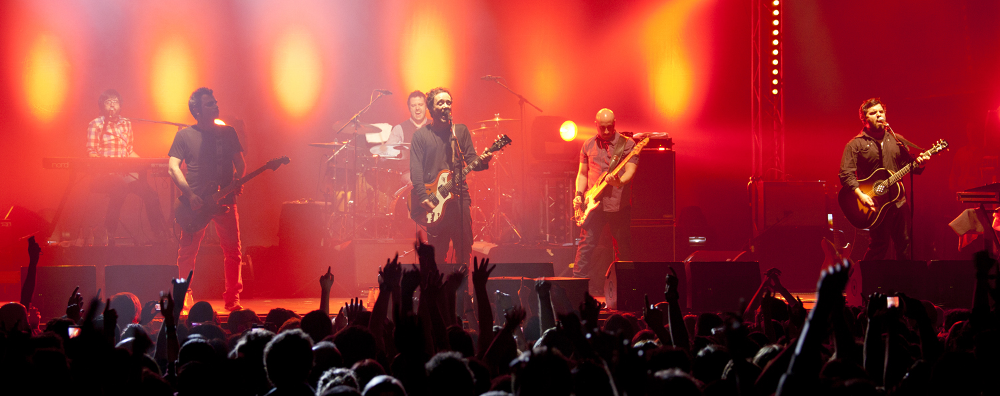
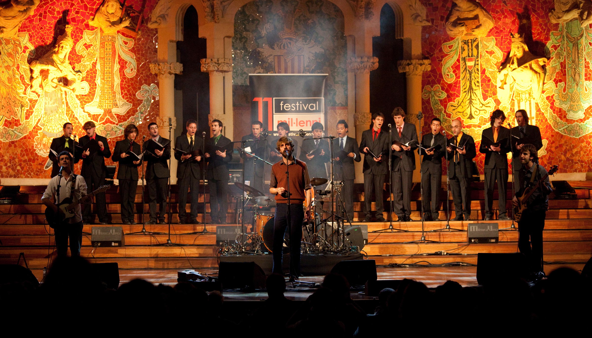
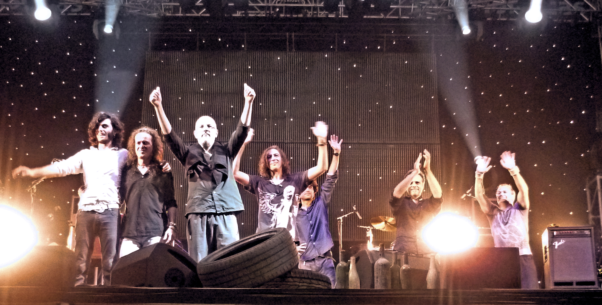

Els Pets

By piti fly
- 1985, Constantí, Tarragona
- Pop-rock
- 25.06. - 22:00 hores
IX!

By Gatrecords
- 2007, Catalunya
- Pop, Rock
- 24.06. - 22:00 hores
Gossos

By Carlos Juliá
- 1993, Manresa
- Rock català
- 24.06. - 23:00 hores
Love of Lesbian

By Alterna2
- 1997, Sant Vicenç dels Horts
- Pop-rock
- 25.06. - 21:00 hores
Manel

By Alterna2
- 2007, Barcelona
- Indie pop, Indie folk
- 26.06. - 21:00 hores
Sopa de Cabra

By AgTigress
- 1986, Girona
- Rock català, Rock clàssic, Rock-pop
- 25.06. - 23:00 hores
Txarango
 By rs-foto
By rs-foto
- 2010, Ripoll
- Fusió musical, reggae, pop i salsa
- 26.06. - 22:00 hores